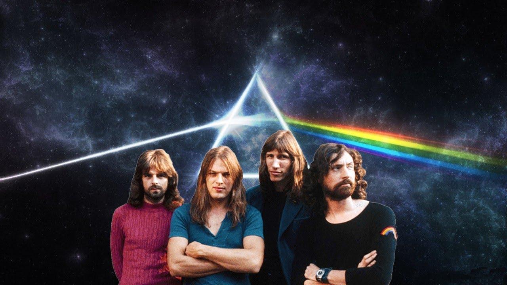

Главная страницаПрародитель всей современной музыкиСамые популярные жанры музыки |
Рок-музыка имеет большое количество направлений: от достаточно «лёгких» жанров, таких как танцевальный рок-н-ролл, от которого в своё время это направление и произошло поп-рок, брит-поп, до брутальных и агрессивных жанров — дэт-метала и грайндкора. Содержание песен варьируется от лёгкого и непринуждённого до мрачного, глубокого и философского. Часто рок-музыка противопоставляется поп-музыке и т. н. «попсе».
